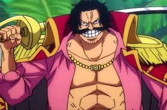

-
Gol D. Roger
conhecido pela maioria como Gold Roger, foi um lendário pirata que ficou conhecido como Rei dos Piratas, famoso como o homem que fazia o que ninguém achava possível,conquistou a Grand Line e acumulando uma vasta fortuna, mas sabia que logo morreria por uma doença incurável. O Governo Mundial pretendia que Roger fosse executado publicamente para desencorajar a pirataria, mas suas últimas palavras tiveram o impacto oposto. Ele afirmou que qualquer um que pudesse encontrar seu tesouro, poderia ficar com ele. Como tal, isso fez com que Roger fosse o responsável por iniciar a Grande Era dos Piratas.
-
um figurante

embora para muitos seje apenas um figurante, ele foi o homem q fez a pergunta a Roger cuja a resposta iniciou a grande era dos piradas e graças a isso ocorre a historia dessa obra